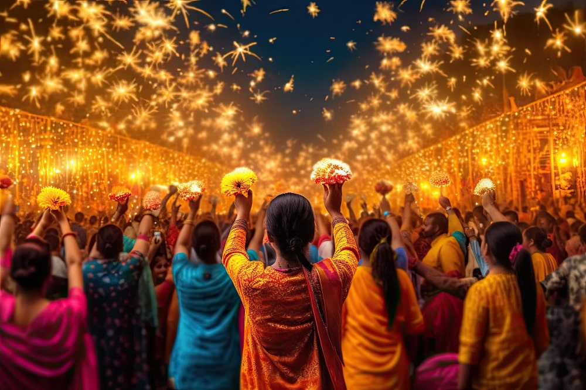

FESTIVALS IN INDIA

A festival is an event ordinarily staged by a community,centering on and celebrating some unique aspect of that community and its traditions,often marrked as a local or national holiday,like Durga Puja,Eid,Holi, X-Mas etc.
IMPORTANT FESTIVALS ARE: